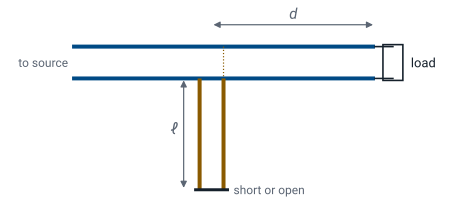
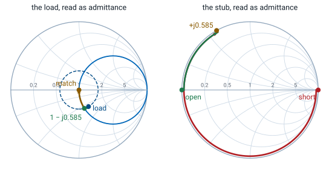

L13 - Smith Charts IV#
Smith Charts IV
Today we build the matching element out of the line itself.
Lesson 13 · Module 1: Foundations · Maj Ellis · Dr. Neil Rogers
Learning Objectives
- I can use the Smith Chart to solve transmission line problems.
Lesson 12 matched a load with a length of line and one capacitor or inductor. At microwave frequencies a lumped element is a poor reactance: a few picofarads is hard to buy at the right value, and the leads of any part add inductance of their own. A short piece of transmission line ending in a short or an open circuit has a purely reactive input impedance that we set by cutting it to length. That piece is a stub. Today we derive the stub’s reactance, place it on the Smith chart, and design a single-stub tuner: a line of length \(d\) from the load, then a stub of length \(\ell\) in shunt.
The Single-Stub Tuner

The tuner has two lengths to choose. The line of length \(d\) rotates the load admittance to the \(g = 1\) circle, exactly as in Lesson 12’s shunt procedure. The stub of length \(\ell\) supplies the susceptance that cancels what is left. It connects in shunt at a T junction, and the next frames find its susceptance from its length.
The Shorted Stub
From Lesson 11, with \(z_L = 0\):
A stub is a line with a known load, so Lesson 11’s input impedance formula applies directly. A short circuit is \(z_L = 0\), which leaves only \(j\tan\beta\ell\). The result is purely imaginary for every length, so the stub is a pure reactance, as a lossless line ending in a lossless load must be. Its reciprocal gives the susceptance a shorted stub adds in shunt. As \(\ell\) runs from zero to \(\lambda/4\), the stub’s reactance runs from zero to \(+j\infty\): a short shorted stub looks like an inductor.
The Open Stub
Divide the top and bottom by \(z_L\), then let \(z_L \to \infty\):
An open circuit is \(z_L \to \infty\), which we cannot substitute directly. We divide the numerator and denominator by \(z_L\) first; the terms with \(1/z_L\) then vanish in the limit. The open stub’s admittance has the same form as the shorted stub’s impedance. A short open stub, less than \(\lambda/4\), has positive susceptance and looks like a capacitor. Every value of \(b\), positive or negative, comes from a stub of each type shorter than \(\lambda/2\).
Stubs on the Chart
Stub admittance lies on the outer circle, \(g = 0\).
Shorted stub starts at \(y = \infty\): right edge.
Open stub starts at \(y = 0\): left edge.
Lengthen the stub: turn clockwise to the \(b\) needed.
A stub is a line, so the chart finds its length the same way it finds any length: rotate toward the generator from the load. The stub’s load is a short or an open with \(\vert\Gamma\vert = 1\), so its VSWR circle is the outer circle, where \(g = 0\). On the admittance reading, a short is \(y = \infty\) at the right edge and an open is \(y = 0\) at the left edge. We turn clockwise from the proper edge to the susceptance we need and read the turn on the WTG scale.
The Single-Stub Procedure
Plot \(y_L\) at \(-\Gamma_L\); draw its VSWR circle.
Rotate toward the generator to \(g = 1\): \(y = 1 \pm jb\); read \(d\).
Need a stub of \(\mp jb\).
Rotate from the short or open edge to \(\mp jb\); read \(\ell\).
The procedure is Lesson 12’s shunt procedure with the capacitor or inductor replaced by a stub. The first two steps fix \(d\) and leave \(y = 1 \pm jb\). The stub must add the opposite susceptance, which puts \(y\) at the center. The third step finds the stub length on the outer circle. The algebra of the previous frames checks each chart reading.
Worked Example: Single-Stub Match

Worked example — 33.9 + j17.9 Ω with a stub
Lesson 12’s load has \(\Gamma_L = 0.281\angle 119.9^\circ\), so \(y_L\) sits at \(0.281\angle -60.1^\circ\). Rotating \(d = 0.0189\lambda\) toward the generator reaches \(y = 1 - j0.585\). The stub must add \(+j0.585\):
On the chart, the \(+j0.585\) point on the outer circle reads \(0.334\lambda\) clockwise from the short and \(0.084\lambda\) from the open. At 1 GHz on a cable with \(v_p = 2\times10^{8}\ \text{m/s}\), \(\lambda = 20\ \text{cm}\): \(d = 3.78\) mm, and the stub is \(16.8\) mm open or \(66.8\) mm shorted.
Choosing Short or Open
Shorter stub: less frequency sensitivity, less loss.
Coax: shorted. An open end radiates and has fringing capacitance.
Microstrip: open. A short needs a via to ground.
Either stub type gives the same susceptance at the design frequency, so the choice comes from how the stub is built and how it behaves off frequency. A stub’s susceptance changes with frequency faster the longer it is, so the shorter option keeps the match over a wider band; here that is the \(0.084\lambda\) open stub. Construction can override that. An open end of a coaxial line is not a clean open, because fields fringe past the end and some power radiates, so coaxial tuners use shorted stubs. On a circuit board an open stub is just an etched trace, while a short needs a via through the board.
The Second Solution
Continue to the upper crossing, \(y = 1 + j0.585\), at \(d = 0.3142\lambda\):
Stub must add \(-j0.585\).
Short: \(\cot\beta\ell = 0.585\), \(\ell = 0.166\lambda\).
Open: \(\tan\beta\ell = -0.585\), \(\ell = 0.416\lambda\).
The VSWR circle crosses \(g = 1\) twice, so the tuner has a second design. The second crossing needs a longer line from the load and a stub of negative susceptance, which is inductive. A shorted stub less than \(\lambda/4\) long supplies it, so the second design pairs a long \(d\) with a short shorted stub. Its total length of line is larger than the first design’s open-stub version, so it gives the narrower bandwidth of the two. It does have the shortest shorted stub, \(0.166\lambda\), which can suit a coaxial tuner.
The Stub on the Explorer
A stub is just a line with a short or open load, so the explorer can model it. It opens on a short, \(R_L = 0\) and \(X_L = 0\), rotated \(0.334\lambda\): the admittance readout gives \(y_{in} \approx +j0.58\), the stub of the worked example. Drag \(d\) back to zero and forward again: the amber admittance point starts at the right edge and sweeps clockwise around the outer circle through every susceptance. Then set \(33.9 + j17.9\ \Omega\) and \(d = 0.0189\lambda\) to see the point the stub cancels.
Summary
Symbol / idea |
What it is |
Number to remember |
|---|---|---|
Shorted stub |
Line ending in a short |
\(z = j\tan\beta\ell\), \(y = -j\cot\beta\ell\) |
Open stub |
Line ending in an open |
\(z = -j\cot\beta\ell\), \(y = j\tan\beta\ell\) |
Stub on the chart |
Outer circle, \(g = 0\) |
short at the right edge, open at the left (as \(y\)) |
Single-stub tuner |
Line \(d\), then shunt stub \(\ell\) |
\(d\) to \(g = 1\); stub cancels \(b\) |
Two solutions |
Two crossings of \(g = 1\) |
the shorter total line has the wider band |
Short or open |
Built as the medium allows |
coax shorted, microstrip open |
Practice
Where This Is Going
Lesson 14: transients. A pulse on the line, before any steady state exists.
Every lesson since Lesson 6 assumed a single frequency in steady state, which is why one complex reflection coefficient could describe a line. Lesson 14 drops that assumption. A voltage step launched onto a line bounces between the source and the load, and each bounce is set by a reflection coefficient at that end. The lab in Lessons 15 and 16 measures both pictures: the bounces in time and the reflection coefficient on a network analyzer’s Smith chart.